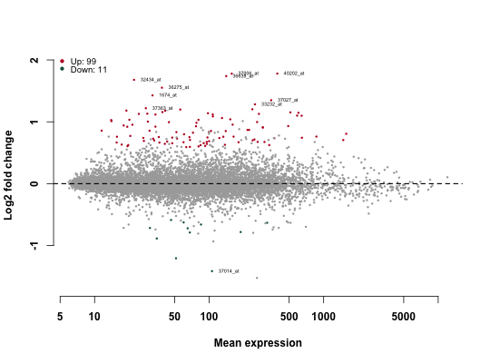

Differential expression using limma:
- lm_fit(): Fit easily linear model for gene expression data using limma::lmFit().
- lm_results(): Extract results from lm_fit analysis. Compared to the function topTable(),
it performs automatically an independent filtering as described by Bourgon et al., PNAS 2010.
- results_names(): Returns the names of the estimated effects (coefficents) of the model
lm_fit(eset, design, logged2)
lm_results(object, contrast, independentFiltering = TRUE, alpha = 0.05,
filter, theta, pAdjustMethod = "BH", ...)
results_names(object)
Arguments
- eset
- an object of class ExpressionSet or a list with two components including data and samples.
eset must contain the information about samples.
- design
- a formula which expresses how the expression for each gene depend on the variables in the sample data.
e.g.: ~ 0 + group (design with multiple groups ), ~ group + condition (design with multiple variables)
and ~ genotype + treatment + genotype:treatment (design with interactions).
- logged2
- logical value. Specify if the data are in log2 scale or not. Allowed values are TRUE or FALSE.
- object
- an object of class "lm_fit" generated from the function lm_fit()
- contrast
- specifies what comparison to extract from the object to build a results table.
Possible values include:
- a character vector with three elements:
the name of a factor in the design formula, the name of group 1 and group 2 to be compared;
e.g.: c("group", "grp1", "grp2"). "grp1" is used as numerator and "grp2" as denominator for
computing the fold change.
- a list of 2 character vectors to be compared. These names should be elements of lm_results_names(object).
e.g.: list(c("grp1","grp2"), c("grp3", "group4"))
- independentFiltering
- logical, whether independent filtering should be applied automatically
- alpha
- the significance cutoff used for optimizing the independent filtering (by default 0.1).
- filter
- the vector of filter statistics over which the independent filtering will be optimized.
- theta
- the quantiles at which to assess the number of rejections from independent filtering
- pAdjustMethod
- method used to adjust the p-values for multiple testing.
Allowed values include "none", "BH", "BY" and "holm" (See ?p.adjust).
- ...
- other arguments to be passed to the function limma::topTable
Value
- lm_fit(): Returns an object of class "MArrayLM" (see limma:?lmFit) and "lm_fit".
Comprared to lmFit(), the object returned by lm_fit() contains supplementary variables named:
- design_formula: which holds the design formula.
- samples: annotation of each samples as provided in eset.
- data: unlogged gene expression data
- lm_results(): Returns an object of class "DE_Results" which is a simple subclass of DataFrame (in S4Vectors)
containing log2 fold changes, base means across samples, t-test statistics, p-values
adjusted p-values. The function plot_MA() can be used to draw the results. (See ?plot_MA).
- results_names(): Returns the names of the estimated effects (coefficents) of the model.
Examples
# Load and prepare data
data(ALL_bcrneg)
ALL_bcrneg$mol.biol <- factor(make.names(ALL_bcrneg$mol.biol),
levels = c("NEG", "BCR.ABL"))
# Fit linear model
fit <- lm_fit(ALL_bcrneg, design = ~0+mol.biol, logged2 = TRUE)
# result names
results_names(fit)
#> [1] "mol.biolNEG" "mol.biolBCR.ABL"

# Independent filtering threshold and rejection plot
attr(res,"filterThreshold")
#> 10%
#> 10.18845